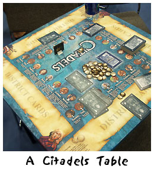
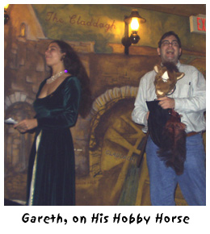
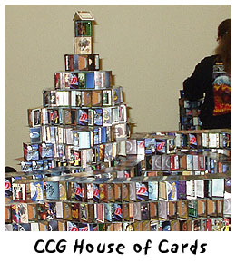
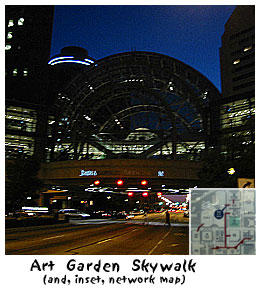

# 128: Another installment of Trials, Triumphs and TrivialitiesJuly 31, 2003 Dear Friends, That's right, I'm off again to another U.S. city. Considering that I'm not too fond of travel, I have to say, it's been a very busy summer. This time, my trusty airplane took me to Indianapolis, capitol of Indiana, and more importantly the new home of the GenCon gaming convention. As was the case last year, Christopher Allen and I travelled to this midwestern gathering in order to meet with players, StoryBuilders, partners, and potential partners and to generally come up to speed on the latest goings-on in the tabletop roleplaying and strategy gaming industries. And, as is usually the case, this trip (definitely not a vacation) helped jar my brain out of its usual pathways and I learned some interesting things along the way. Seeing InnovationI think what impressed me the most at GenCon was a sense of innovation — of companies coming up with new and interesting ideas which may (or may not) make an impact on the industry as a whole. I didn't see this as much last year, though I'm sure it was there, because that was my first GenCon. But this time around I was able to see that, yes, the times were constantly a'changing. Perhaps innovation isn't quite the right word, because some of these companies were actually retreading old ideas — but they were retreading old ideas that aren't currently seen in the gaming industry, and really, that's something new in its own way. The first thing that caught my eye was a particularly bizarre golfing club. Instead of a head at the end, it had a little miniature golfer, who had his own golf club. When you pushed a button, some gears shifted and that miniature club hit a miniature ball across a miniature fairway. New and innovative? Well, I'd never seen it before, but these things were apparently a big fad back in the 1950s. One company was selling a miniature, prerelease version of their RPG rules, whose central mechanic was based around Tarot cards. There was nothing else like it on the exhibit floor, but even the designer admitted that he'd come up with the idea from the Everway roleplaying game, whose mechanic was a set of evocative cards. I thought Fantasy Flight Games' booth was pretty cool, because they had a large demo area for all their strategy games, each game on its own table. The cool bit was that they'd printed up playing mats that wrapped around the tables, and helped explain all the basic rules to the players, and also provided locations to put all the cards and pieces. I kind of wish FFG printed these mats to go with their games! The moral to all this? We can get stuck into the way we're doing things, if they're effective or not. Don't be afraid to innovate, and if you don't feel able to do so on your own, take advantage of trade shows to help you start thinking in new ways about what you do Seeing HumorI was at GenCon on business. People to see, people to see, people to see, and, y'know, people to see. In contrast, our players who attended the convention — and there were somewhere in excess of 50 — were clearly there to have fun. And, that fun was infectious. Up in the Marrach Party Suite, the players a couple of times played a game called Curses which doesn't take itself seriously at all. It was a game that forced the players to roleplay weird things, like selling insurance and giving news broadcasts. It also infected them with "curses", making them speak in weird accents, contort themselves into weird positions, and generally look and act funny. The players were hams, and seemed to love it all. There was humor and fun at the Marrach player's gathering Thursday night too. Gareth's player was given a hobby horse as his prize for favorite character, StoryCoder Kalle received a stuffed dog for his work with Elmer, and another player was given a Jester's hat as Castle Clown. On the convention floor, you saw more of the same — a sense of fun, humor, and general irreverence for any "seriousness" in gaming. My favorite was the side of one corridor that was set aside for building mighty houses out of CCG game cards. Given the huge prices that are still being charged for singleton cards, the perversity of the card house building put a smile on my face. Sometimes, as game designers, we can set our sights on pretty high-faluting realms. Creating Internet-based , virtual communities. Modelling physical, economic, and psychological systems. It can be pretty abstract stuff. Don't ever forget, the players are there to have fun, and if you're too engrossed in the seriousness of your game, you're not going to provide it for them. Be willing to laugh at yourself, at your game, and at its background. You're not writing War & Peace, you're creating a fun gaming environment for (hopefully) lots of players — so make sure there's humor there and fun. Seeing the Usual SuspectsI don't want to be too repetitive, but I'll mention in brief that I saw some of the same things during this trip that I've seen at other trips over the last year. The first was the awesome sense of community which I commented on when I wrote you from last year's GenCon in Milwaukee. If anything it was stronger this year, because so many Marrach players now knew each other not just from within the Castle, but also from last year's GenCon gathering. The folks at TEC (and Grendel's Revenge) really seem to be getting into the act too. Last year there were a handful of them at the Marrach gathering, while this year the Worlds Apart folks sponsored a gathering all there own, and had more than a dozen attendees. (I'm hoping that this all means that by next year we might see some nascent Underlight and M59 gatherings too.) We create real communities on the Internet, but it's really cool to watch them become physical communities as well. Finally, as is the case with almost every city I visit outside of the Bay Area, the physical environment of Indianapolis made me see the world in a slightly different way. Indianapolis is a city of extreme: hot, sticky summers and cold, frozen winters. Thus, there's a real desire for people to get off the streets. As a result, you see a concept almost foreign in my home town of Berkeley (and nearby San Francisco): the Skywalk. These enclosures usually span building to building, helping people get to nearby places without ever having to step out into the heat and the cold. The downtown area around the convention center had a coherent, mostly interconnected, set of skywalks, allowing easy travel to and from a number of hotels, the convention center, the AAA baseball stadium and a nearby mall. Some of the skywalks were even utilitarian: a walk spanning two parts of the mall contained shops and the Arts Garden Skywalk had an ampitheatre which could be used for gatherings (and is, I believe, where White Wolf announced they were destroying the World of Darkness — a/ka, coming out with a lucrative second edition). Without cold (and hot) or some other serious environmental need (pollution, crime, floods, etc.) you'd never think of this type of innovation, but as world designers you should always be thinking of wacky variety, and that's something that travel can offer you. SincerelyThis GenCon experience has burned me out a bit — not a terrible surprise, as I knew in advance it'd be "The Most Exhausting 4 Days in Gaming". I was really happy chatting with lots of different people I usually only see on the Internet, however, as it's always nice connecting up email handles and real people. I'll be happy to be home again, however, and back to work at Skotos, and writing a more regular set of discussions in this column. Hopefully I won't be writing any more travel memoirs until next year.
Sincerely,
|